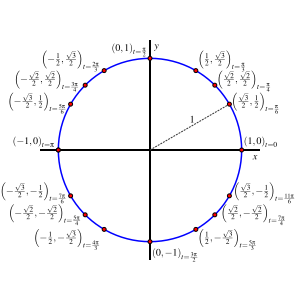
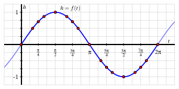
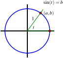
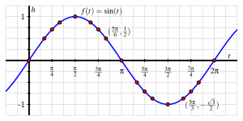
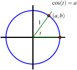
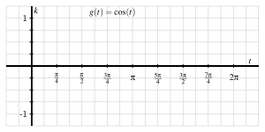
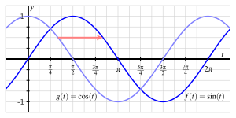
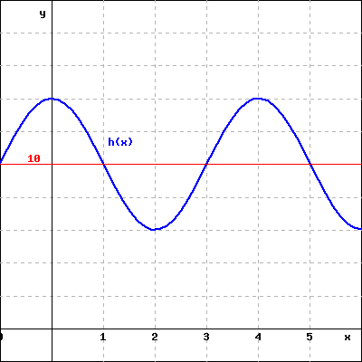

What are the sine and cosine functions and how do they arise from a point traversing the unit circle?
What important properties do the sine and cosine functions share?
How do we compute values of \(\sin(t)\) and \(\cos(t)\text{,}\) either exactly or approximately?
In Section 2.1, we saw how tracking the height of a point that is traversing a cirle generates a periodic function, such as in Figure 2.1.10. Then, in Section 2.2, we identified a collection of \(16\) special points on the unit circle, as seen in Figure 2.3.1.

Figure2.3.1.The unit circle with \(16\) labeled special points.
to review and study the special points on the unit circle.
Preview Activity2.3.1.
If we consider the unit circle in Figure 2.3.1, start at \(t = 0\text{,}\) and traverse the circle counterclockwise, we may view the height, \(h\text{,}\) of the traversing point as a function of the angle, \(t\text{,}\) in radians. From there, we can plot the resulting \((t,h)\) ordered pairs and connect them to generate the circular function pictured in Figure 2.3.2.

Figure2.3.2.Plot of the circular function that tracks the height of a point traversing the unit circle.
What is the exact value of \(f( \frac{\pi}{4} )\text{?}\) of \(f( \frac{\pi}{3} )\text{?}\)
Complete the following table with the exact values of \(h\) that correspond to the stated inputs.
Table2.3.3.Exact values of \(h\) as a function of \(t\text{.}\)
\(t\)
\(0\)
\(\frac{\pi}{6}\)
\(\frac{\pi}{4}\)
\(\frac{\pi}{3}\)
\(\frac{\pi}{2}\)
\(\frac{2\pi}{3}\)
\(\frac{3\pi}{4}\)
\(\frac{5\pi}{6}\)
\(\pi\)
\(h\)
\(t\)
\(\pi\)
\(\frac{7\pi}{6}\)
\(\frac{5\pi}{4}\)
\(\frac{4\pi}{3}\)
\(\frac{3\pi}{2}\)
\(\frac{5\pi}{3}\)
\(\frac{7\pi}{4}\)
\(\frac{11\pi}{6}\)
\(2\pi\)
\(h\)
What is the exact value of \(f( \frac{11\pi}{4} )\text{?}\) of \(f( \frac{14\pi}{3} )\text{?}\)
Give four different values of \(t\) for which \(f(t) = -\frac{\sqrt{3}}{2}\text{.}\)
Subsection2.3.1The definition of the sine function
The circular function that tracks the height of a point on the unit circle traversing counterclockwise from \((1,0)\) as a function of the corresponding central angle (in radians) is one of the most important functions in mathematics. As such, we give the function a name: the sine function.
Definition2.3.4.
Given a central angle in the unit circle that measures \(t\) radians and that intersects the circle at both \((1,0)\) and \((a,b)\text{,}\) as shown in Figure 2.3.5, we define the sine of \(t\), denoted \(\sin(t)\text{,}\) by the rule
Figure2.3.5.The definition of the sine of an angle \(t\text{.}\)
Because of the correspondence between radian angle measure and distance traversed on the unit circle, we can also think of \(\sin(t)\) as identifying the \(y\)-coordinate of the point after it has traveled \(t\) units counterclockwise along the circle from \((1,0)\text{.}\) Note particularly that we can consider the sine of negative inputs: for instance, \(\sin(-\frac{\pi}{2}) = -1\text{.}\)
Based on our earlier work with the unit circle, we know many different exact values of the sine function, and summarize these in Table 2.3.6.
Table2.3.6.Values of \(h(t) = \sin(t)\) at special points on the unit circle.
\(t\)
\(0\)
\(\frac{\pi}{6}\)
\(\frac{\pi}{4}\)
\(\frac{\pi}{3}\)
\(\frac{\pi}{2}\)
\(\frac{2\pi}{3}\)
\(\frac{3\pi}{4}\)
\(\frac{5\pi}{6}\)
\(\pi\)
\(\sin(t)\)
\(0\)
\(\frac{1}{2}\)
\(\frac{\sqrt{2}}{2}\)
\(\frac{\sqrt{3}}{2}\)
\(1\)
\(\frac{\sqrt{3}}{2}\)
\(\frac{\sqrt{2}}{2}\)
\(\frac{1}{2}\)
\(0\)
\(t\)
\(\pi\)
\(\frac{7\pi}{6}\)
\(\frac{5\pi}{4}\)
\(\frac{4\pi}{3}\)
\(\frac{3\pi}{2}\)
\(\frac{5\pi}{3}\)
\(\frac{7\pi}{4}\)
\(\frac{11\pi}{6}\)
\(2\pi\)
\(\sin(t)\)
\(0\)
\(-\frac{1}{2}\)
\(-\frac{\sqrt{2}}{2}\)
\(-\frac{\sqrt{3}}{2}\)
\(-1\)
\(-\frac{\sqrt{3}}{2}\)
\(-\frac{\sqrt{2}}{2}\)
\(-\frac{1}{2}\)
\(0\)
Moreover, if we now plot these points in the usual way, as we did in Preview Activity 2.3.1, we get the familiar circular wave function that comes from tracking the height of a point traversing a circle. We often call the graph in Figure 2.3.7 the sine wave.

Figure2.3.7.Plot of the sine function on the interval \([-\frac{\pi}{4}, \frac{7\pi}{4}]\text{.}\)
Subsection2.3.2The definition of the cosine function
Given any central angle of radian measure \(t\) in the unit circle with one side passing through the point \((1,0)\text{,}\) the angle generates a unique point \((a,b)\) that lies on the circle. Just as we can view the \(y\)-coordinate as a function of \(t\text{,}\) the \(x\)-coordinate is likewise a function of \(t\text{.}\) We therefore make the following definition.
Definition2.3.8.
Given a central angle in the unit circle that measures \(t\) radians and that intersects the circle at both \((1,0)\) and \((a,b)\text{,}\) as shown in Figure 2.3.9, we define the cosine of \(t\), denoted \(\cos(t)\text{,}\) by the rule
Figure2.3.9.The definition of the cosine of an angle \(t\text{.}\)
Again because of the correspondence between the radian measure of an angle and arc length along the unit circle, we can view the value of \(\cos(t)\) as tracking the \(x\)-coordinate of a point traversing the unit circle clockwise a distance of \(t\) units along the circle from \((1,0)\text{.}\) We now use the data and information we have developed about the unit circle to build a table of values of \(\cos(t)\) as well as a graph of the curve it generates.
Activity2.3.2.
Let \(k = g(t)\) be the function that tracks the \(x\)-coordinate of a point traversing the unit circle counterclockwise from \((1,0)\text{.}\) That is, \(g(t) = \cos(t)\text{.}\) Use the information we know about the unit circle that is summarized in Figure 2.3.1 to respond to the following questions.
What is the exact value of \(\cos(\frac{\pi}{6})\text{?}\) of \(\cos(\frac{5\pi}{6})\text{?}\)\(\cos(-\frac{\pi}{3})\text{?}\)
Complete the following table with the exact values of \(k\) that correspond to the stated inputs.
Table2.3.10.Exact values of \(k = g(t) = \cos(t)\text{.}\)
\(t\)
\(0\)
\(\frac{\pi}{6}\)
\(\frac{\pi}{4}\)
\(\frac{\pi}{3}\)
\(\frac{\pi}{2}\)
\(\frac{2\pi}{3}\)
\(\frac{3\pi}{4}\)
\(\frac{5\pi}{6}\)
\(\pi\)
\(k\)
\(t\)
\(\pi\)
\(\frac{7\pi}{6}\)
\(\frac{5\pi}{4}\)
\(\frac{4\pi}{3}\)
\(\frac{3\pi}{2}\)
\(\frac{5\pi}{3}\)
\(\frac{7\pi}{4}\)
\(\frac{11\pi}{6}\)
\(2\pi\)
\(k\)
On the axes provided in Figure 2.3.11, sketch an accurate graph of \(k = \cos(t)\text{.}\) Label the exact location of several key points on the curve.

Figure2.3.11.Axes for plotting \(k = \cos(t)\text{.}\)
What is the exact value of \(\cos( \frac{11\pi}{4} )\text{?}\) of \(\cos( \frac{14\pi}{3} )\text{?}\)
Give four different values of \(t\) for which \(\cos(t) = -\frac{\sqrt{3}}{2}\text{.}\)
How is the graph of \(k = \cos(t)\) different from the graph of \(h = \sin(t)\text{?}\) How are the graphs similar?
As we work with the sine and cosine functions, it’s always helpful to remember their definitions in terms of the unit circle and the motion of a point traversing the circle. At http://gvsu.edu/s/0xe 2
gvsu.edu/s/0xe
you can explore and investigate a helpful Desmos animation that shows how this motion around the circle generates each of the respective graphs.
Subsection2.3.3Properties of the sine and cosine functions
Because the sine function results from tracking the \(y\)-coordinate of a point traversing the unit circle and the cosine function from the \(x\)-coordinate, the two functions have several shared properties of circular functions.
Properties of the sine and cosine functions.
For both \(f(t) = \sin(t)\) and \(g(t) = \cos(t)\text{,}\)
the domain of the function is all real numbers;
the range of the function is \([-1,1]\text{;}\)
the midline of the function is \(y = 0\text{;}\)
the amplitude of the function is \(a = 1\text{;}\)
the period of the function is \(p = 2\pi\text{.}\)
It is also insightful to juxtapose the sine and cosine functions’ graphs on the same coordinate axes. When we do, as seen in Figure 2.3.12, we see that the curves can be viewed as horizontal translations of one another.

Figure2.3.12.Graphs of the sine and cosine functions.
In particular, since the sine graph can be viewed as the cosine graph shifted \(\frac{\pi}{2}\) units to the right, it follows that for any value of \(t\text{,}\)
Because each of the two preceding equations hold for every value of \(t\text{,}\) they are often referred to as identities.
In light of the definitions of the sine and cosine functions, we can now view any point \((x,y)\) on the unit circle as being of the form \((\cos(t),\sin(t))\text{,}\) where \(t\) is the measure of the angle whose vertices are \((1,0)\text{,}\)\((0,0)\text{,}\) and \((x,y)\text{.}\) Note particularly that since \(x^2 + y^2 = 1\text{,}\) it is also true that \(\cos^2(t) + \sin^2(t) = 1\text{.}\) We call this fact the Fundamental Trigonometric Identity.
There are additional trends and patterns in the two functions’ graphs that we explore further in the following activity.
Activity2.3.3.
Use Figure 2.3.12 to assist in answering the following questions.
Give an example of the largest interval you can find on which \(f(t) = \sin(t)\) is decreasing.
Give an example of the largest interval you can find on which \(f(t) = \sin(t)\) is decreasing and concave down.
Give an example of the largest interval you can find on which \(g(t) = \cos(t)\) is increasing.
Give an example of the largest interval you can find on which \(g(t) = \cos(t)\) is increasing and concave up.
Without doing any computation, on which interval is the average rate of change of \(g(t) = \cos(t)\) greater: \([\pi, \pi+0.1]\) or \([\frac{3\pi}{2}, \frac{3\pi}{2} + 0.1]\text{?}\) Why?
In general, how would you characterize the locations on the sine and cosine graphs where the functions are increasing or decreasingly most rapidly?
Thinking from the perspective of the unit circle, for which quadrants of the \(x\)-\(y\) plane is \(\cos(t)\) negative for an angle \(t\) that lies in that quadrant?
Subsection2.3.4Using computing technology
We have established that we know the exact value of \(\sin(t)\) and \(\cos(t)\) for any of the \(t\)-values in Table 2.3.6, as well as for any such \(t \pm 2j\pi\text{,}\) where \(j\) is a whole number, due to the periodicity of the functions. But what if we want to know \(\sin(1.35)\) or \(\cos(\frac{\pi}{5})\) or values for other inputs not in the table?
Any standard computing device such as a scientific calculator, Desmos, Geogebra, or WolframAlpha, has the ability to evaluate the sine and cosine functions at any input we desire. Because the input is viewed as an angle, each computing device has the option to consider the angle in radians or degrees. It is always essential that you are sure which type of input your device is expecting. Our computational device of choice is Desmos. In Desmos, you can change the input type between radians and degrees by clicking the wrench icon in the upper right and choosing the desired units. Radian measure is the default.
It takes substantial and sophisticated mathematics to enable a computational device to evaluate the sine and cosine functions at any value we want; the algorithms involve an idea from calculus known as an infinite series. While your computational device is powerful, it’s both helpful and important to understand the meaning of these values on the unit circle and to remember the special points for which we know the outputs of the sine and cosine functions exactly.
Activity2.3.4.
Answer the following questions exactly wherever possible. If you estimate a value, do so to at least \(5\) decimal places of accuracy.
The \(x\) coordinate of the point on the unit circle that lies in the third quadrant and whose \(y\)-coordinate is \(y = -\frac{3}{4}\text{.}\)
The \(y\)-coordinate of the point on the unit circle generated by a central angle opening counterclockwise with one side on the positive \(x\)-axis that measures \(t = 2\) radians.
The \(x\)-coordinate of the point on the unit circle generated by a central angle with one side on the positive \(x\)-axis that measures \(t = -3.05\) radians. (With the negative radian measure, we view the angle as opening counterclockwise from its initial side on the positive \(x\)-axis.)
The value of \(\cos(t)\) where \(t\) is an angle in Quadrant II that satisfies \(\sin(t) = \frac{1}{2}\text{.}\)
The value of \(\sin(t)\) where \(t\) is an angle in Quadrant III for which \(\cos(t) = -0.7\text{.}\)
The average rate of change of \(f(t) = \sin(t)\) on the intervals \([0.1,0.2]\) and \([0.8,0.9]\text{.}\)
The average rate of change of \(g(t) = \cos(t)\) on the intervals \([0.1,0.2]\) and \([0.8,0.9]\text{.}\)
Subsection2.3.5Summary
The sine and cosine functions result from tracking the \(y\)- and \(x\)-coordinates of a point traversing the unit circle counterclockwise from \((1,0)\text{.}\) The value of \(\sin(t)\) is the \(y\)-coordinate of a point that has traversed \(t\) units along the circle from \((1,0)\) (or equivalently that corresponds to an angle of \(t\) radians), while the value of \(\cos(t)\) is the \(x\)-coordinate of the same point.
The sine and cosine functions are both periodic functions that share the same domain (the set of all real numbers), range (the interval \([-1,1]\)), midline (\(y = 0\)), amplitude (\(a = 1\)), and period (\(P = 2\pi\)). In addition, the sine function is horizontal shift of the cosine function by \(\frac{\pi}{2}\) units to the right, so \(\sin(t) = \cos(t-\frac{\pi}{2})\) for any value of \(t\text{.}\)
If \(t\) corresponds to one of the special angles that we know on the unit circle (as in Figure 2.3.1), we can compute the values of \(\sin(t)\) and \(\cos(t)\)exactly. For other values of \(t\text{,}\) we can use a computational device to estimate the value of either function at a given input; when we do so, we must take care to know whether we are computing in terms of radians or degrees.
Exercises2.3.6Exercises
1.
Without using a calculator, find the exact value as fraction (not a decimal approximation).
Remark: Your answer cannot contain trigonometric functions; it must be a fraction (not a decimal) and it may contain square roots (e.g., sqrt(2)).
3.
Determine whether each of the following expressions is Positive or Negative without using a calculator.
\(\sin(70^\circ)\)
Negative
Positive
\(\cos(138^\circ)\)
Negative
Positive
\(\sin(\frac{15\pi}{16})\)
Positive
Negative
\(\cos(\frac{20\pi}{21})\)
Negative
Positive
4.
Question 30:

a) Write an expression (involving the variable \(a\) and \(h\) ) for the slope of the line segment joining \(S\) and \(T\) in the figure above.
Slope = (an expression involving the variables a and h)
b) Evaluate your expression for \(a = 1.6\) and \(h = 0.01\text{.}\) Round your answer to two decimal places.
Slope = (a value rounded to two decimal places)
5.
Without using a computational device, determine the exact value of each of the following quantities.
\(\displaystyle \sin(-\frac{11\pi}{4})\)
\(\displaystyle \cos(\frac{29\pi}{6})\)
\(\displaystyle \cos(\frac{17\pi}{3})\)
\(\displaystyle \sin(47\pi)\)
\(\displaystyle \cos(-113\pi)\)
\(t\) in quadrant III such that \(\cos(t) = -\frac{\sqrt{3}}{2}\)
\(t\) in quadrant IV such that \(\sin(t) = -\frac{\sqrt{3}}{2}\)
6.
We now know three different identities involving the sine and cosine functions: \(\sin(t+\frac{\pi}{2}) = \cos(t)\text{,}\)\(\cos(t-\frac{\pi}{2}) = \sin(t)\text{,}\) and \(\cos^2(t) + \sin^2(t) = 1\text{.}\) Following are several proposed identities. For each, your task is to decide whether the identity is true or false. If true, give a convincing argument for why it is true; if false, give an example of a \(t\)-value for which the equation fails to hold.